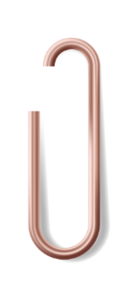
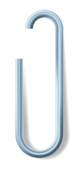

The lab
From UI/UX design to working code, here's a collection of things I've enjoyed designing and building.

StudyCat — Productivity App
A productivity web app I designed and built end to end, centered on a focus timer and an animated pixel-pet that studies alongside you. Still in progress — the pixel art above is the companion itself, currently in two coat colors with awake/asleep states.
- Designed the entire UI in Figma before writing any code, then implemented it in React
- Hand-drew the pixel-pet sprites and their outfit/room customization assets to give the product its own visual identity
- Coded the focus timer and session-stats tracking in React + Tailwind
- Own the whole pipeline solo: concept → UI design → art → code → deployment on Vercel

Meridian: Telehealth Website & Dashboard Design
A full design system for a fictional telehealth service, covering a desktop landing page, a mobile version, and a patient dashboard, all built around making care feel fast, human, and easy to start.
- Designed a desktop landing page with a lifestyle hero, care area cards, trust stats, a three-step "how it works" flow, and pay-per-visit vs. Plus pricing
- Adapted the full experience for mobile with swipeable carousels, stacked pricing plans, and a compact hero with thumb-friendly calls to action
- Built a patient dashboard with vitals cards, an appointments panel, a medication checklist, trend charts, and messaging
- Kept a warm, calm visual language and consistent design patterns across the marketing site and the in-product experience
Chronos: Time Management Website Design
A full landing page design for a fictional time-tracking platform for distributed teams, turning scattered hours into a clear, trustworthy picture of how work gets done.
- Designed a hero with a dark gradient backdrop, a bold headline, and a desktop and mobile dashboard preview alongside a free trial call to action
- Laid out a tabbed feature section (Tracking, Insights, Payroll, Admin) with feature cards, plus alternating image and text blocks for payroll-ready timesheets and productivity insights
- Built trust-building sections with a global dot-map, key usage stats, client logos, and customer testimonials with star ratings
- Created a transparency and privacy carousel, an enterprise security section with SSO, auditing, and compliance badges, a closing free-trial CTA, and a full footer with newsletter signup
Tea Resort & Museum — Website Design
A full landing page design for a fictional tea resort and museum in Bangladesh, blending nature, heritage, and luxury hospitality into one cohesive booking experience.
- Designed a hero carousel highlighting the resort's tea-garden setting and core calls to action
- Laid out feature cards for stays, the museum, tea-garden experiences, and dining
- Built a "why choose us" section and trust-building highlights around location, safety, and hospitality
- Designed the full footer with contact info, quick links, newsletter signup, and payment methods
O! Potato — Food Delivery & Reservation App
A mobile app design for browsing restaurants, ordering food, and booking tables — bringing cuisine discovery, deals, notifications, and reservations together in one place.
- Designed the home screen around featured deals, combos, and quick cuisine browsing
- Built a notifications screen split between favorite restaurants and system alerts
- Designed a full table reservation flow — branch, time, seat count, and table availability
- Laid out a searchable cuisines directory with short, personality-driven descriptions
ShipNow — Logistics Dashboard
A frontend developer assignment: turning a Figma design for a logistics dashboard into a real, responsive web app. The design was provided, so I took the developer's side of the handoff and owned the build, from app shell to breakpoint-specific layouts.
- Built the full app shell — sidebar, header, and footer — plus the dashboard with metric cards, charts, a live tracking panel, and an alerts panel
- Built the shipments grid view with status tabs, search, filter, and sort controls, backed by mock data
- Designed and built dedicated layouts for desktop (full sidebar, 4-column grid), tablet (icon-only rail, 2-column grid), and mobile (single-column, compact toolbar) instead of squeezing one layout to fit
- Added client-side login validation — required fields, email format, password length, show/hide password toggle
Neural Machine Translation for Chakma-Bangla
My undergraduate thesis: an exploration of low-resource techniques for translating Chakma — an Indigenous language of the Chittagong Hill Tracts with very little parallel data — into Bangla.
- Fine-tuned BanglaT5 using iterative back-translation to make the most of a tiny parallel corpus
- Reached a BLEU score of 19.00 — a 30.4% improvement over baseline
- Matched GPT-4.1's in-context learning performance and outperformed every prior fine-tuned system on this pair
StudyHive — a Learning Platform
A YouTube-style resource-sharing hub built for students to upload, browse, and revisit course material in one place.
- Led the front-end design and development: dashboard layout, course cards, and navigation
- Integrated the Flask + MySQL backend that powers the resource library
- Designed the browsing experience around recently-viewed and recommended courses
3D Maze Escape Game
A real-time 3D maze game built from scratch — no game engine, just raw graphics programming.
- Built the render loop and maze geometry directly with PyOpenGL, GLUT, and GLU
- Implemented first- and third-person camera modes
- Added simple enemy AI, collision detection, and a countdown-timer win/lose state
eBird Bias Correction (GNN + XGBoost)
Citizen-collected bird sighting data is famously biased: some areas get birdwatched constantly, others almost never. This pipeline models and corrects for that observation bias.
- Built a Graph Neural Network to capture spatial relationships between observation sites
- Layered XGBoost on top for the final bias-corrected prediction
- Owned the full pipeline: preprocessing, modeling, evaluation, and documentation